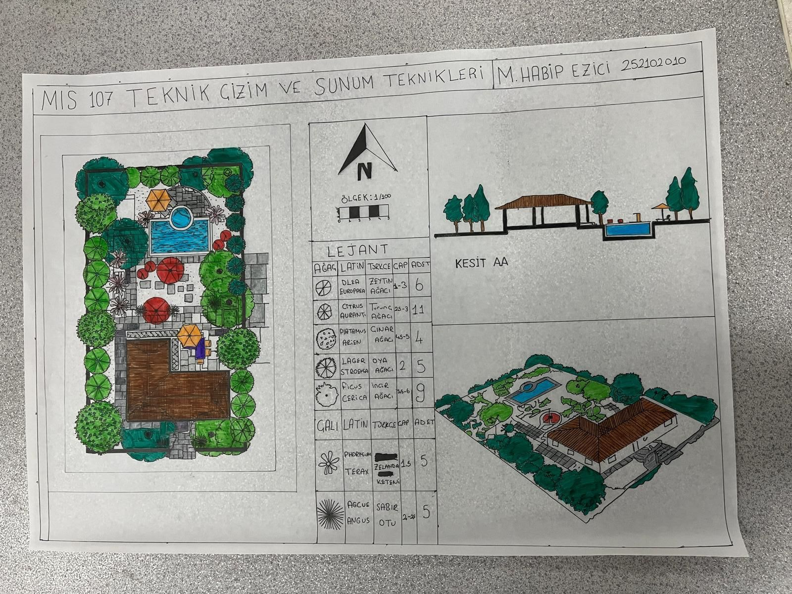

1
Teknik Çizim
MIS 107 Teknik çizim ve sunum teknikleri final ödevi
Teknik çizim ve sunum becerilerini bir arada kullandığım dönem sonu projesi. Çizim standartları ve sunum düzeni üzerine yoğunlaşılmıştır.